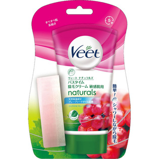

返回列表
产品名称：ヴィート ナチュラルズ バスタイム 除毛クリーム 敏感肌用

レキットベンキーザー・ジャパン ヴィート ナチュラルズ バスタイム 除毛クリーム 敏感肌用 １５０ｇ（医薬部外品）
メーカー レキットベンキーザー・ジャパン
JANコード 4906156037180
商品の特徴
簡単！シャワーしながら除毛
- 成分・分量
- チオグリコール酸、セテアリルアルコール、POEセトステアリルエーテル、流動パラフィン、POPステアリルエーテル、VP・ヘキサデセン共重合体、PG、酸化Ti、水酸化Ca、グルコン酸Na、ケイ酸Mg、尿素、無水ケイ酸、グレープシードオイル、pH調整剤、粘度調整剤、香料
- 用法及び用量
- 1．付属のスポンジの色が付いた面(柔らかい面)で、ムダ毛が隠れるくらいまでクリームをお肌にむらなく塗ります。クリームは肌にすりこまないようにし、塗った後はすぐに手を洗ってください。
2．クリームを塗り始めてから、1分間そのまま待ちます。その間、水がかからないようにしてください。
3．さらに2分間待ちます。その間、シャワーを浴びたりできますが、クリームをぬった部分に直接、水やお湯を勢いよくかけないようにしてください。
4．スポンジで一部のクリームを取り除き、除毛ができていることを確認